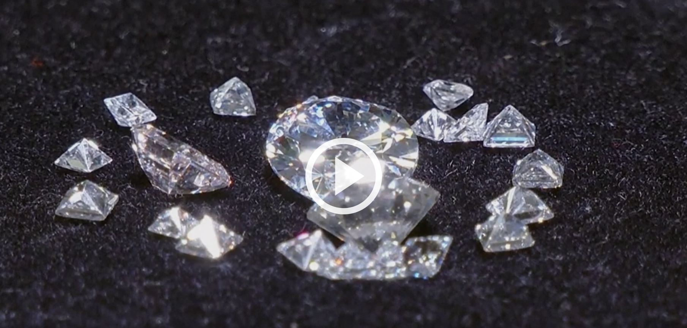

Hiện tượng nóng lên toàn cầu đang thúc đẩy các công ty khởi nghiệp thu giữ CO2 trong khí quyển và biến nó thành sản phẩm có lợi nhuận.
Kim cương, vật liệu xây dựng và thậm chí cả quần áo thể thao, những sản phẩm này liên quan gì đến biến đổi khí hậu? Câu trả lời là tất cả chúng đều có thể được tạo ra bằng cách tái chế carbon dioxide (CO2), loại khí nhà kính tích tụ trong bầu khí quyển và làm Trái Đất nóng lên. Vì vậy, các startup công nghệ đằng sau những chuyển đổi này đang thu hút sự chú ý của các nhà đầu tư.
Aether Diamonds có trụ sở tại New York, Mỹ, là công ty đầu tiên tạo ra kim cương trong phòng thí nghiệm bằng cách tái chế CO2. Nhà sáng lập kiêm Giám đốc điều hành Ryan Shearman cho biết Aether Diamonds có mục tiêu loại bỏ 20 tấn CO2 từ khí quyển cho mỗi carat kim cương mà họ bán ra.
"Không giống như kim cương tự nhiên hay kim cương tổng hợp trong phòng thí nghiệm thông thường, chúng tôi không ngồi đây tranh cãi về quá trình nào gây hại cho hành tinh ít nhất, mà lật lại mô hình đó. Chúng tôi sản xuất kim cương mang lại lợi ích hữu hình cho môi trường, hành tinh và con người", Shearman nhấn mạnh.
